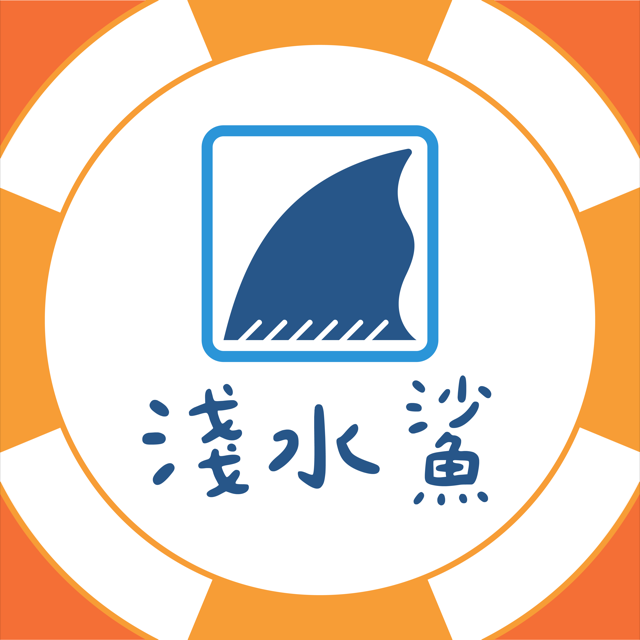

淺水鯊製作所
背景
嗨！我的本業是數學教育。
不過我常常被「有趣的創意」吸引，也被那些「能夠實現創意的人」吸引。
與 Maker 的淵源——為什麼想做？
國中開始玩麵包板，高中碰了 3D 列印、雷切和 Arduino，開始工作以後就比較少做了。2026 年和同事去了 Maker Faire Tokyo，回來就決定自己報名參展。
想把在東京看到的 maker 精神帶回台灣：maker 不是另一種才藝班，也不是升學的加分工具，而是每個人都能動手做出有趣的東西。
剛巧我的住處也還沒有 3D 列印和雷切機，所以就嘗試用冰棒棍、橡皮筋、束帶和紙做一些最基礎的結構。重點是有趣對吧？
我還對什麼感興趣？
- 喜歡新奇有趣的想法或內容，想把這些美好分享給好多人知道。
- 想認識在做（或想做）maker 教育的人，聽聽你們眼中的 maker 教育是什麼、遇到了哪些困難。
- 蒐集有趣的上課素材或教法